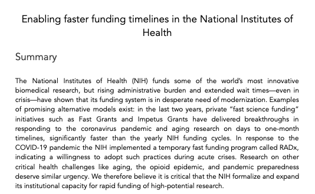

In February 2023, I published a memo with the Day One project proposing changes that the NIH and NIA should implement to accelerate progress in biomedical sciences.
While the memo focuses broadly on biotech and medical fields, I wanted to discuss informally why these changes matter for aging research.
Government is still the biggest funder of aging research.
Despite recent growth in new institutes and funding models, government remains the largest funding source. The National Institute of Aging's yearly budget exceeds what experimental institutes operate with combined. Experimental meta-science should advocate for bigger governmental changes, not as an end goal itself.

Gatekeeping.
There is a competitive disadvantage in aging research compared to other biotech sciences. Top-ranked biology publications emphasize tool developers like those working with CRISPR and sequencing. To advance life extension, innovators should apply expertise to aging science.
The Impetus Grants program brought 50 new researchers into aging by welcoming those without prior experience. However, government structures discourage applying "outside of your core expertise," particularly disadvantaging smaller labs attempting to pivot toward aging research.
The rate at which we fund research is one of the most obvious variables we can control.
Statistical analysis shows only a few major healthspan trials occur yearly. Clinical trial success rates suggest breakthroughs remain unlikely before individuals reach advanced age.
Quality improvements face inherent unpredictability, but research pace is controllable. Reducing grant processing from one year to months represents an urgent acceleration need.